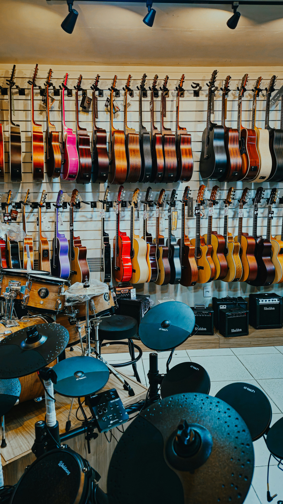
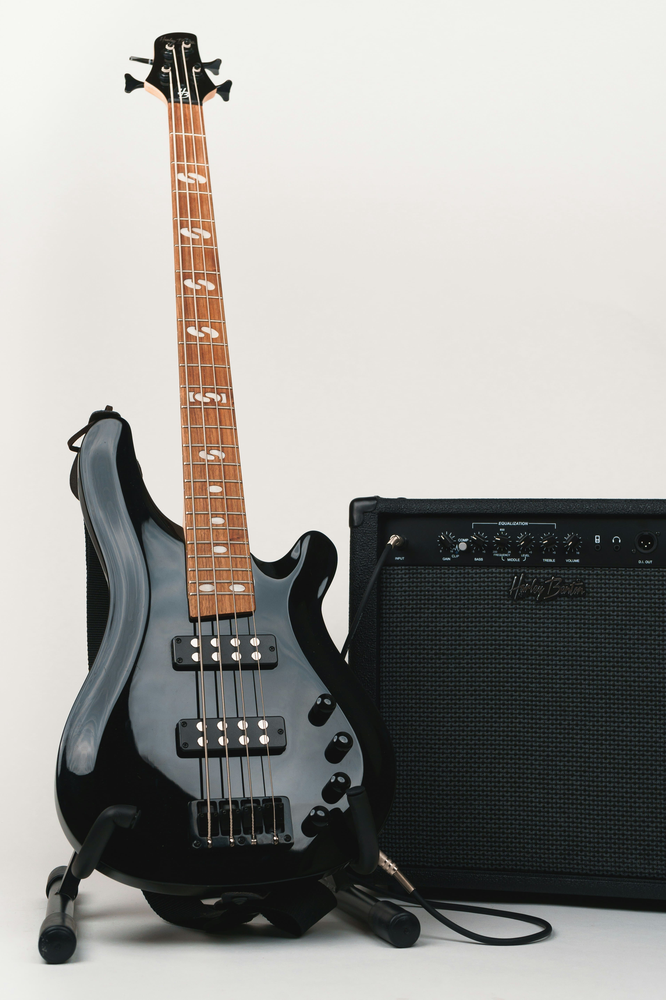
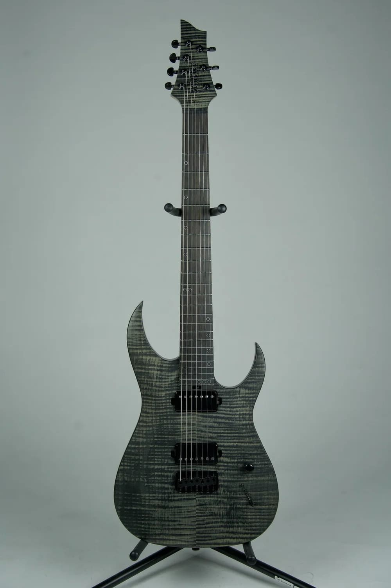
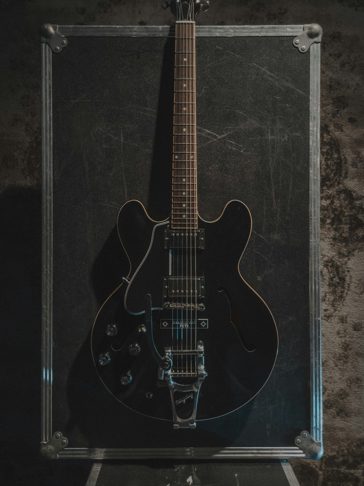
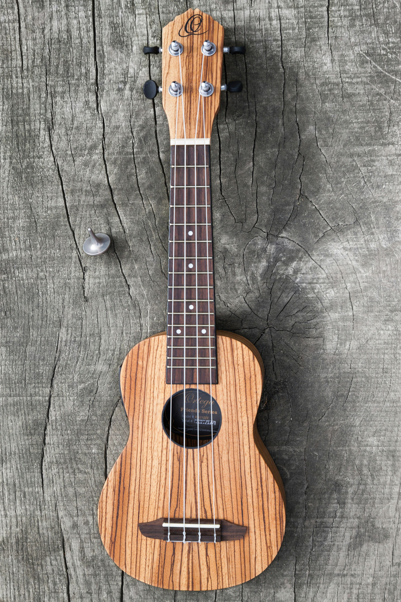
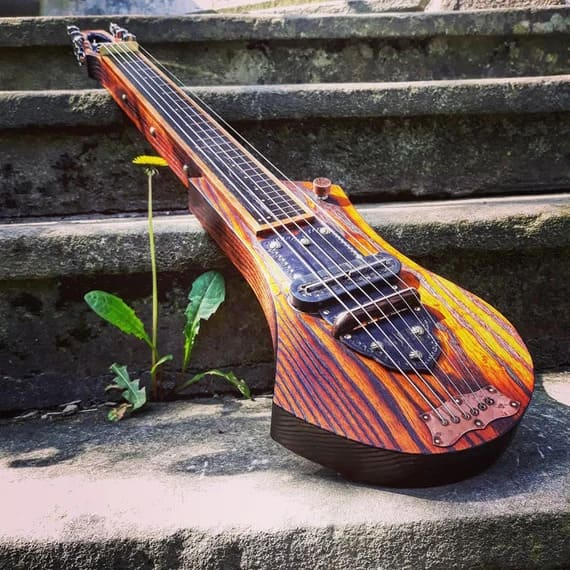

Discover a unique collection of guitars and string instruments at Suki's Guitar Shop. From powerful bass guitars and extended-range electric guitars to distinctive lap steel guitars and versatile ukuleles, we offer something for every musical taste. Whether you're looking for a completely different sound, experimenting with new playing styles, or expanding your instrument collection, explore our range and find something that inspires you.
Every instrument has its own personality, sound, and purpose. Our collection brings together a variety of unique instruments designed to help musicians explore different musical styles and express their creativity. Whether you play in a band, perform on stage, or simply enjoy making music at home, Suki's Guitar Shop has exciting options to take your musical experience to the next level.

The Bass Guitar delivers deep, powerful low-frequency sounds that form the foundation of any band. With its rich tones and rhythmic versatility, it is essential for rock, jazz, funk, and many other music styles.
The 12-String Guitar features twice as many strings as a standard six-string guitar, creating a rich, shimmering, and full-bodied sound. It is perfect for folk, rock, and acoustic performances that need extra depth and beautiful harmonies.

The 7-String Guitar adds an extra low string to the traditional six-string design, offering greater range and heavier tones. Popular in metal, hard rock, and progressive music, it is ideal for musicians seeking powerful sounds and creative possibilities.

The Semi-Hollow Guitar combines the versatility of an electric guitar with the warm, resonant qualities of a hollow body. Its smooth and balanced tones make it an excellent choice for jazz, blues, rock, and soul music.

The Ukulele is a compact and lightweight instrument known for its bright, cheerful sound. With its simple design and easy playability, it is perfect for beginners, casual musicians, and anyone who enjoys relaxing acoustic music.

The Lap Steel Guitar produces a distinctive, smooth sound using a metal slide across its strings. Played horizontally, it creates expressive gliding notes that are especially popular in country, blues, and Hawaiian music.